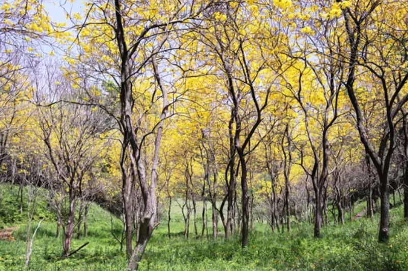

Deep Within the Lungs of the Earth
Brazil: Where the Rainforest Meets the Atlantic Wave
Home to the Amazon Rainforest, often called the “Lungs of the Earth,” Brazil is a land where breathtaking biodiversity meets the roaring grandeur of Iguazu Falls. From emerald canopies to golden coastlines, explore its most iconic destinations region by region.
Eternal Embrace & Sacred Skies
Iconic Landmarks
Sacred Roots & Ocean Wonders: A journey through Brazil’s timeless spiritual soul, where ancient stone meets celestial blue.

Christ the Redeemer
An Art Deco masterpiece keeping watch over the Marvelous City.

Brasília Cathedral
A modernist vision of concrete and glass in Brazil's futuristic capital.

Sugarloaf Mountain
Rising 396 meters above the harbor, this quartz and granite peak is accessible via a glass-walled cable car system. Its unique name reportedly dates back to the 16th century, referring to the traditional shape of concentrated refined sugar loaves.
Cobblestone Dreams & Endless Horizons
Cities of Distinction
From the pastel-colored colonial squares of Olinda to the dramatic mountain-backed skyline of Rio, discover cities where timeless architecture meets the raw beauty of the Atlantic coast.

Rio de Janeiro
Where the emerald mountains kiss the sapphire sea. Experience the rhythm of the samba and the serenity of the Atlantic breeze.

São Paulo
A concrete jungle with a beating heart of gold. The culinary capital of the South, home to world-class museums and nightlife that never sleeps.

Salvador
Where pastel history dances to the beat of Afro-Brazilian drums. Experience the colorful soul of Bahia and the warm embrace of the Atlantic.

Manaus
Where the black and golden rivers merge at the gateway to the Amazon. Experience the wild pulse of the rainforest and the historic grandeur of the jungle metropolis.
A Gastronomic Celebration
Brazilian cuisine is a vibrant tapestry woven from indigenous ingredients, Portuguese heritage, and African soul. Every bite tells a story of the land.

Churrasco
A rich kiss of rock salt and open flame—pure, smoky perfection on a skewered blade. A meat lover’s ultimate ritual.

Feijoada
A deeply comforting embrace of slow-simmered black beans and rich, savory meats—the literal heart and soul of Brazil.

Pão de Queijo
A warm, crispy golden shell hiding a melt-in-your-mouth, cheesy chew. A bite-sized piece of pure comfort.
ブラジル連邦共和国の歴史
Federative Republic of Brazil
Brazil is defined by a tumultuous yet prosperous journey—evolving from diverse indigenous cultures, through Portuguese colonization and the Imperial era, to a republic that stands today as South America’s ultimate superpower.
古代・先植民地期
多様な先住民族文化（〜1500年）
アマゾン川流域や沿岸部において、トゥピ・グアラニー系など数百万人の先住民族が自然と共生した独自の社会を築く。
近世（植民地時代）
ポルトガル人の到達（1500年）
ペドロ・アルヴァレス・カブラルが到達。染料となる木「パウ・ブラジル（ブラジルボク）」が大量に輸出されたことが国名の由来となる。
砂糖と金鉱、奴隷貿易（16世紀〜18世紀）
北東部でのサトウキビ栽培に続き、18世紀には内陸部ミナスジェライス州で大規模な金鉱（ゴールドラッシュ）が発見。労働力として西アフリカから、南米最多となる数百万人もの黒人奴隷が強制連行される。
近代（ブラジル帝国と共和国の誕生）
ポルトガル宮廷の移転 （1808年）
ナポレオン戦争による本国危機から、ポルトガル王室が首都リスボンを脱出してリオデジャネイロへ遷都。
ブラジル帝国の独立 （1822年）
ポルトガル皇太子ペドロが「独立か死か」を叫び、1822年9月7日に初代皇帝ペドロ1世として独立を宣言。南米で唯一「帝政」による独立を維持。
奴隷制の廃止と共和制への移行 （1888年〜1889年）
1888年にペドロ2世の娘イザベル皇女により奴隷制が完全に廃止（西半球最後の廃止国）。これに伴い大農園主の支持を失った帝政が崩壊し、翌1889年に軍事クーデターにより「ブラジル共和国」が誕生。
近現代（経済ブームと軍事独裁）
「コーヒー・コン・レッチ」と日系移民 （20世紀初頭）
コーヒー農家（サンパウロ）と酪農家（ミナスジェライス）の交代による政権独裁期。1908年には「笠戸丸」によって初の日本人移民が到着し、近代農業に大きく貢献。
ヴァルガス独裁と近代化 （1930年〜1945年）
ジェトゥリオ・ヴァルガスによるポピュリズム独裁政権が誕生。工業化と中央集権化が進む。
ブラジリア遷都（1960年）
クビチェック大統領のもと、内陸部開発を狙い、何もない荒野に未来都市「ブラジリア」を建設して首都を移転。
軍事独裁政権 （1964年〜1985年）
1964年、カステロ・ブランコ軍事政権樹立。クーデターにより軍部が実権を掌握。「ブラジルの奇跡」と呼ばれる高度経済成長を達成する一方、激しい反体制派の弾圧と巨額の対外債務を抱える。
現代
民政移管（サルネイ政権）と国際社会での躍進 （1985年〜現在）
民主化へ復帰。深刻なインフレを乗り越え、2000年代以降は豊富な資源、農業、工業を武器に新興経済大国（BRICS）の筆頭として世界をリード。
現代のブラジル
アマゾンの環境保護、根強い貧富の格差（ファヴェーラ問題）など国内の課題に向き合いながら、南米ナンバーワンの経済・政治・文化の超大国として独自の存在感を放ち続けている。
19世紀初頭のナポレオン戦争は、ヨーロッパの勢力図を激変させただけでなく、大西洋を越えてブラジルの歴史、ひいては南米の国際政治を決定づけた一大転換点となりました。この危機の本質は、ナポレオンの侵攻によって「ヨーロッパの本国（ポルトガル）が崩壊し、植民地（ブラジル）が事実上の『本国』へと逆転した」という、世界史的にも極めて異例な国家主権の移転劇にあります。
ブラジルに甚大な影響を与えたナポレオン戦争による本国危機の構図について、以下の3つの視点から論説します。
1.宮廷のリオデジャネイロ遷都：主従関係の逆転
1807年、ナポレオン率いるフランス軍は、イギリスとの貿易を続けるポルトガル王国への侵攻を開始しました。陥落寸前の中、ポルトガル摂政皇太子ドン・ジョアン（後のジョアン6世）は、イギリス海軍の護衛のもと、宮廷貴族や官僚ら約1万5,000人とともに国を捨ててブラジルへ逃亡するという前代未聞の決断を下しました（1808年リオデジャネイロ到着）。
この「宮廷のブラジル遷都」により、それまで富を吸い上げられるだけの「植民地」だったブラジルは、突如としてポルトガル帝国の「事実上の首都（本国）」へと昇格することになります。
2.植民地体制の崩壊と「経済的解放」
リオに到着したドン・ジョアンが最初に行った最重要政策が、1808年の「諸国との貿易港開放令」です。それまでブラジルは、本国ポルトガルとのみ交易が許される「植民地重商主義（宗主国独占）」に縛られていました。しかし、本国がフランスに占領されたため、ブラジルは自ら経済を回さざるを得なくなります。
イギリスへの市場開放:
支援の見返りとして、イギリスを中心とした友好国への自由貿易が解禁されました。
近代化の推進:
リオデジャネイロには中央銀行、印刷局、高等教育機関、植物園などが次々と設立され、一気に近代的国家のインフラが整いました。
このプロセスにより、ブラジルは経済的にも文化的にも「ポルトガル本国への依存」を完全に脱却しました。
3. 本国復帰の拒絶から「無血独立」へ
1814年にナポレオンが失脚し、ヨーロッパに平和が戻ると、ポルトガル本国（本土）の住民や政治家たちは「宮廷はリスボンに戻るべきだ」と強く要求しました。また、ブラジルを再び元の「格下の植民地」に格下げしようと画策します。しかし、すでに10年以上「帝国の中心」として繁栄し、自由貿易の恩恵を受けていたブラジルの地主やエリート層が、従属的な立場に戻ることを受け入れるはずがありませんでした。
1821年、国王ジョアン6世は圧力に抗えずポルトガルへ帰国しますが、息子のドン・ペドロを摂政としてブラジルに残します。そして翌1822年、本国からの執拗な服従要求に対し、ドン・ペドロはブラジルの独自性を守るため「独立か死か」を宣言（イピランガの叫び）。ブラジル帝国として独立を果たしました。
ブラジルは「本国の危機によって、王室そのものが転がり込んできた」という特殊な経緯をたどりました。その結果、植民地時代から帝国への移行が比較的平和的かつ連続的に行われ、広大な領土を分裂させることなく一つの巨大な国家として独立を維持できたのです。ナポレオン戦争による本国の危機は、ブラジルにとっては「国家誕生」への最大の引き金であったと言えます。
ポピュリズム独裁政権と軍事政権の違いをブラジル歴史上の2人の大物、ヴァルガス（ポピュリズム）と、1964年のカステロ・ブランコ軍事政権を例に、4つのポイントで比較してみます。
1.権力の源（だれの支持で成り立っているか）
ポピュリズム独裁：大衆（労働者や貧困層）の熱狂
特定のカリスマ指導者が、エリートに虐げられてきた「一般大衆（庶民）」に直接語りかけ、絶大な人気を集めて権力を握ります。ブラジルの例：ヴァルガス大統領は「貧民の父」と呼ばれ、労働者の圧倒的スターでした。
軍事政権：軍事力（警察・軍隊）と特権階級
国民の人気ではなく、「武力（銃と戦車）」で無理やり政権を奪います。バックには大農場主や大企業などのエリート層、そして（冷戦期は）アメリカがついていました。
2.政治の手法（どうやって統治するか）
ポピュリズム独裁：「あめ」と「むち」の使い分け
労働法を整備したり、最低賃金を上げたりして、国民に大きな利益（あめ）を分け与えます。その代わり、自分に反対する一部の政敵は厳しく弾圧（むち）します。
軍事政権：圧倒的な「むち（恐怖）」と「秩序」
国民を喜ばせる政策よりも、「社会のルールを守らせること」を優先します。憲法を停止し、選挙を禁止し、反抗する者はゲリラでも一般人でも徹底的に拷問・拘束・追放します。
3.目指す社会（何のために独裁するか）
ポピュリズム独裁：社会の構造改革、国の近代化
古い特権階級（ブラジルでいうコーヒー大農場主）を打倒し、新しい近代国家を作ろうとします。国を豊かにして大衆に還元するのが名目です。
軍事政権：現状維持、反共産主義（右派・保守）
「左翼ゲリラや共産主義者が国をめちゃくちゃにしようとしている！秩序を取り戻さねば！」という大義名分で動きます。社会の仕組みをガラリと変えるより、資本主義やエリートの既得権益を「守る」ための独裁です。「左翼ゲリラや共産主義者が国をめちゃくちゃにしようとしている！秩序を取り戻さねば！」という大義名分で動きます。社会の仕組みをガラリと変えるより、資本主義やエリートの既得権益を「守る」ための独裁です。
4.リーダーの姿（顔が見えるか）
ポピュリズム独裁：圧倒的な個人のカリスマ
「この人についていけば間違いない」と思わせる個人のキャラクターがすべてです（ヴァルガス、あるいは隣国アルゼンチンのペロンなど）。「みんな（庶民）のために、俺が独裁をやる！」という熱狂の政治。
軍事政権：組織による無機質な統治
「個人」ではなく「軍（陸海空軍）」という組織そのものが支配します。そのため、大統領（将軍）が数年ごとに交代しても、軍の支配体制自体は何も変わらず淡々と続きます。「国が乱れているから、軍隊が力で黙らせる！」という冷徹な秩序の政治。
ブラジルは、1930〜40年代にヴァルガスの「ポピュリズム」で国を新しくし、1960〜80年代には冷戦の煽りを受けて「軍事政権」の暗黒期を経験しました。
ブラジルは、数多くの大規模な革命や血生臭い反乱を繰り返してきた、非常に激動の歴史を持つ国です。中南米の他の国々（旧スペイン領）が激しい独立戦争を戦ったのに対し、ブラジルはポルトガル王室の皇太子が自ら独立を宣言したため（1822年）、「比較的平和に独立した国」というイメージを持たれがちです。しかし、その後の国内は反乱の連続でした。
1.独立直後の相次ぐ地域反乱（19世紀前半）
皇帝の専制政治への反発や、奴隷制・貧困への不満から、各地で大規模な地方反乱や独立運動が多発しました。
赤道連邦の反乱（1824年）：
北東部の州が皇帝の独裁に反発し、ブラジルからの分離独立を目指した共和派の反乱。
マレーの反乱（1835年）：
北東部サルバドールで、アフリカ系のイスラム教徒の奴隷たちが自由を求めて起こした、ブラジル史上最大級の奴隷蜂起。
ファローピーリャ戦争（1835〜1845年）：
南部のガウショ（牧場主やカウボーイ）たちが中央政府に反旗を翻し、独自の共和国を宣言して10年間も戦い続けたブラジル最大の不服従運動。
2. 帝政の崩壊と共和政へのクーデター（1889年）
奴隷制の廃止（1888年）によって大農場主の支持を失ったブラジル帝国は、翌1889年に軍部による無血クーデター（共和政革命）によってあっけなく崩壊し、共和政へと移行しました。
3. 1930年革命とサンパウロ護憲革命（1930年代）
近代ブラジル最大の政治的激動期です。
1930年革命：
リオグランデ・ド・スル州の知事だったジェトゥリオ・ヴァルガスが、軍部と結託してクーデターを起こし実権を掌握（独自の独裁体制へ）。
サンパウロ護憲革命（1932年）：
ヴァルガスの独裁に怒った大都市サンパウロ州の市民や兵士約13万人（護憲軍）が立ち上がり、政府軍との間で近代的な内戦が勃発。戦車や航空機も投入され、数千人の犠牲者を出しました。
4. 軍事クーデターと軍政時代（1964〜1985年）
冷戦下、左傾化する大統領を警戒した軍部が1964年にクーデターを起こし、政権を奪取。以後21年間にわたり軍事独裁政権が続き、左派ゲリラによる武装闘争や、政府による激しい言論弾圧・反体制派への拷問が行われました。
インフレ（経済危機）はブラジルの民政移管（軍事政権の崩壊とサルネイ政権の誕生）をもたらした最大の原因の一つです。
当時の軍事政権は、自由や人権を弾圧する代わりに「高い経済成長（ブラジルの奇跡）」を約束することで独裁を正当化していました。しかし、その経済がハイパーインフレによって完全に破綻したため、軍部は国を統治する大義名分を失い、民政へ政権を返上せざるを得なくなったのです。軍部にとって、このまま政権に居座り続けて経済が完全に崩壊すれば、自分たちが「国を滅ぼした戦犯」として処刑されたり追放されたりするリスク（生存本能の危機）がありました。そのため軍部は、「これ以上この経済の泥船の舵は取れない。責任を文民（民間人）に押し付けて、自分たちは安全に退場しよう」という計算を働かせ、民政移管を受け入れたのです。
この「軍政崩壊とハイパーインフレの混沌」の時代を経て、ブラジルは1990年代後半にようやく通貨を安定させ、現在の経済大国へと這い上がっていくことになります。